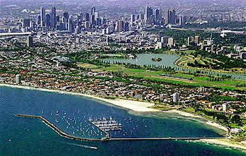
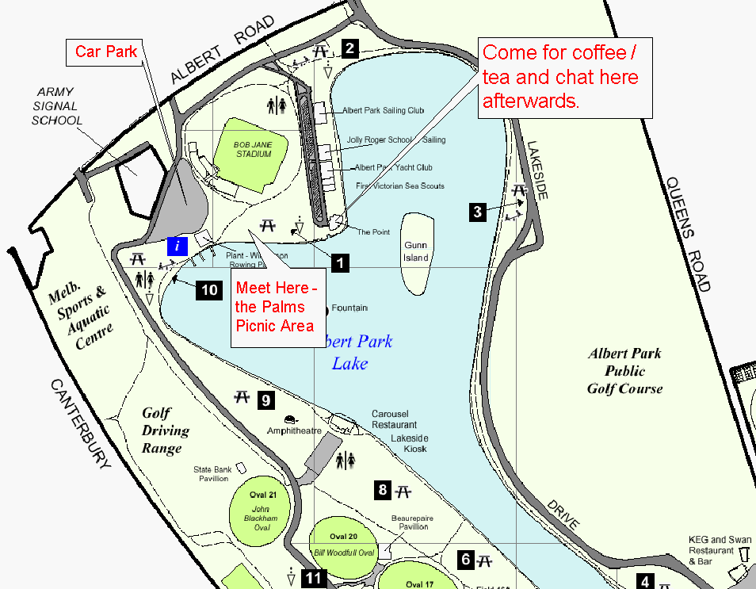

In the past we have celebrated world tai chi /chi gung day at The Palms Picnic Area, at Albert Park Lake. This is next to the water and west of the Point restaurant. See map, below.

Aerial view of Melbourne with Albert Park in the foreground.
All Tai Chi and Qi Gong practitioners and schools are welcome. Please come along, do some form and perhaps meet other tai chi people for a chat and a get together after our practice.
Do your own style of practice. There is no prescribed agenda.
Afterwards those interested will go for coffee/refreshments at the Point restaurant/cafe nearby (next to the lake!). (see map, below)

RANGE - Car
Aughtie Drive, Albert Park (Next to Melbourne's sports and aquatic center), car parking available.
RANGE - Tram
Light rail (St Kilda beach route #96) from Melbourne CBD's Bourke or
Spencer Streets to 'Wright Street' tram stop, next to golf range.